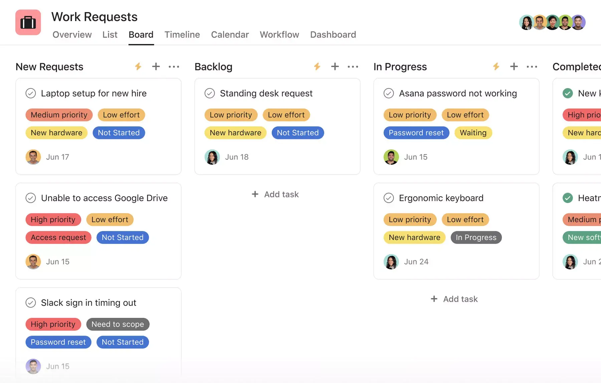
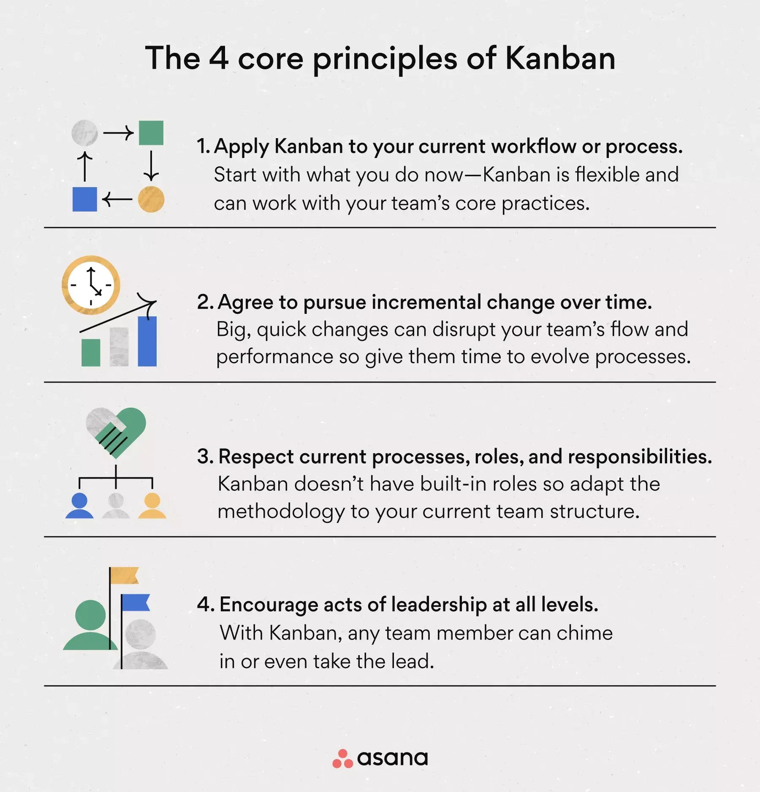
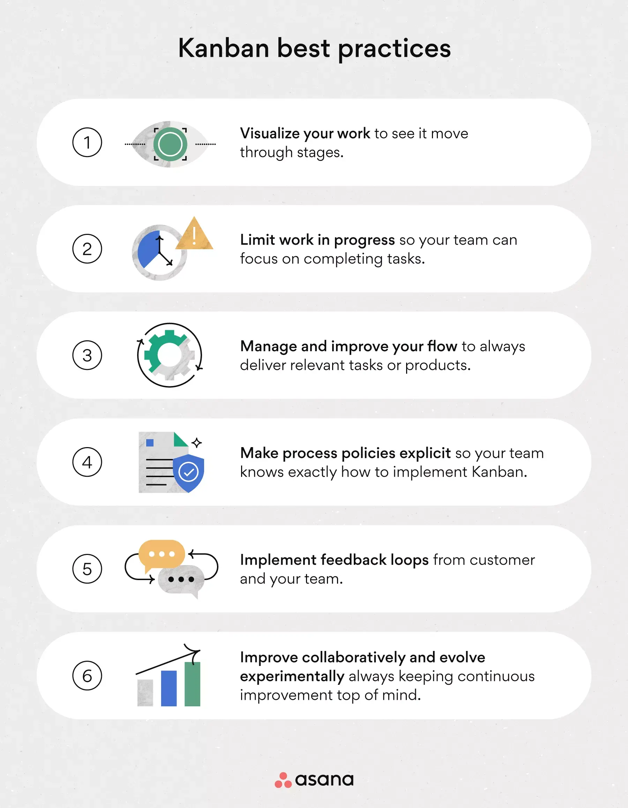
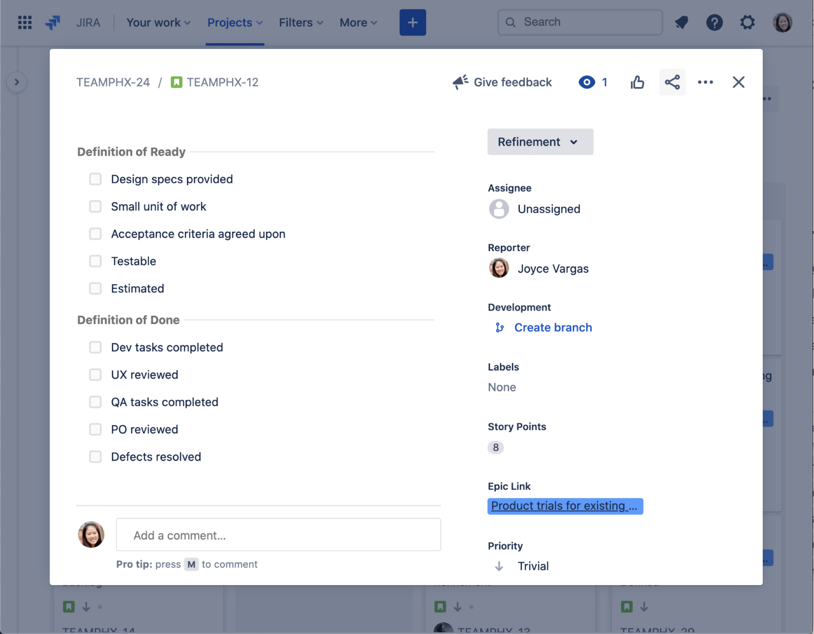

Kanban
Kanban is an Agile management method built on a philosophy of continuous
improvement, where work items are “pulled” from a product backlog into a steady
flow of work. The framework is applied using Kanban boards, a form of visual
project management. In a Kanban board, tasks—represented as cards—move through
stages of work—represented as columns. That way, your team can see where work is
in real-time.
Kanban is especially popular with product, engineering, and software development
teams. But any team that wants to create a more dynamic, flexible workflow can
use them.
History of Kanban
Taiichi Ohno, a Toyota engineer from Japan, created Kanban in the late 1940s.
Ohno realized he could improve the Toyota Production System by incorporating
elements of lean manufacturing: Instead of building new products based on
anticipated demand, Ohno’s Kanban framework—also referred to as the “Just-in-Time”
(JIT) system—produced and re-supplied products as a result of consumer demand.
The new framework transitioned the Toyota manufacturing process from a “push”
process (products are pushed into the market) to a “pull” process (products are
created based on market demand). This meant that Toyota could have a lower
inventory level while still being a competitive player in the market.
“Kanban” is a combination of two Japanese words: 看 (Kàn), meaning “sign,” and
板 (Bǎn), meaning “board.”
Though Kanban still lives on in many manufacturing settings, it was adapted for
software development in the early 2000s. Kanban for software development uses the
same "pull system" process that Ohno's lean manufacturing did.
Software development teams have found Kanban highly complementary to their DevOps
practices. The synergy between Kanban and DevOps accelerates delivery times and
promotes a culture of continuous improvement and operational efficiency.
What are Kanban boards?
Kanban teams use a visualization tool called Kanban boards to manage their
workload and flow.
In a Kanban board, work is displayed on a project board that is organized by
columns. Traditionally, each column represents a stage of work. The most basic
Kanban board might have columns like “To do,” “In progress,” and “Done.” Each
column is filled with visual cards that represent individual tasks. A team moves
through the columns until the tasks are completed.
Picture it like the shelves in a supermarket. As product inventory diminishes
because it’s bought by consumers, staff refills the shelves with new products.
The shelves are never empty, but the product is constantly replaced with new
items—a Kanban board is continuously filled with new tasks as your team completes
old ones.
Now, you can have a physical Kanban board hanging in a conference room or you can
streamline processes online—a much easier solution for remote or virtual teams.

What are Kanban cards?
Kanban cards are the driving force behind the Kanban system, with each card
representing an individual task or work item, providing a clear and concise
overview of the task at hand.
Kanban cards typically include essential details such as the task title,
description, due date, key stakeholders, and the person responsible for it, or
rather, the product owner. Colors are often assigned to different types of work,
so team members can quickly grasp the task's requirements and status.
How does Kanban work?
Kanban boards visualize a team's work by assigning individual tasks to Kanban
cards or sticky notes, which are organized in columns on a whiteboard. These
columns, known as swimlanes, reflect the value stream—a series of specified
stages that tasks or products must complete from beginning to end. Tasks, or
cards, are then placed into their appropriate swimlanes, which effectively maps
out the workflow.
As work progresses, team members remove cards and move them from left to right.
Some swimlanes have a capacity limit, also referred to as a WIP limit (work in
progress), to ensure the Kanban system runs smoothly.
4 core principles of Kanban
There are four core principles to help guide your team as you
think about rolling out a Kanban framework:

- Start with what you do now
You can apply Kanban to any current workflow or process. Unlike more defined
Agile management processes like Scrum, Kanban is flexible enough to work within
your team’s core practices.
- Agree to pursue incremental, evolutionary change
Big changes can be disruptive to your team, and if you try to change everything
at once, your new system may not work. Kanban knows this, which is why the Kanban
framework focuses on continuous improvement and incremental change. Instead of
changing everything all at once, start by pursuing incremental change in order to
truly evolve your team’s processes over time.
- Respect the current process, roles, and responsibilities
Unlike other lean methodologies, Kanban doesn’t have any built-in team roles, so it
works within your current team structure and process. Additionally, your current
process may have some great elements that would be lost if you attempted to
completely revamp your working system in one day.
- Encourage acts of leadership at all levels
In the spirit of continuous improvement, the Kanban method recognizes that change
can come from anywhere—not necessarily just “top-down.” With Kanban, team members
are encouraged to chime in, brainstorm new ways for processes to evolve, and take
the lead on new work initiatives.
Essential Kanban best practices
The Kanban core principles help guide your team’s mentality when you approach the
Kanban workflow. To implement a Kanban process, follow these six practices to help
your team continuously improve and achieve incremental growth—the core tenets of
the Kanban framework.

- Visualize work
One of the biggest advantages of Kanban is the functionality of seeing work “move”
through stages. Not only does this practice give you a broad sense of how work
moves through stages, but you can also get real-time, at-a-glance insight into the
stage of work.
- Limit work in progress
Work In Progress Limits, or WIP limits, are the maximum number of cards that can be
displayed in a single column at any given moment.
As an Agile methodology, Kanban is built on the principle of early delivery, which
means tasks should move quickly between columns instead of languishing with an
ambiguous “in progress” status.
There’s no set requirement for how many tasks should be “in progress” at any given
time, but in general, WIP limits can encourage your team to reduce multitasking and
focus on the production of individual work.
- Manage flow
If you want to limit work in progress, the best way to do that is to optimize the
flow of tasks within your Kanban board. Managing and improving your flow will
decrease your lead time (the amount of time spent between starting on a task and
moving it to the “Done” column on your Kanban board), reduce bottlenecks, and
ensure you’re delivering tasks or shipping new products while they’re still relevant.
- Make process policies explicit
Because tasks move so quickly in Kanban, make sure your team has established and
clearly communicated conventions. Your process policies should guide how your team
implements the Kanban methodology.
Additionally, everyone on your team should be encouraged to participate and
innovate on your Kanban policy, in accordance with the fourth Kanban core
principle: Encourage acts of leadership at all levels.
- Implement feedback loops
In Kanban, you want to gather feedback from two distinct groups: your customers and
your team.
Customers: Gather feedback and user stories from customers on the quality and
effectiveness of the solution your team produced. Was it the right thing to
produce? Were there any problems? If there were problems (like bugs in code or
defects in a product), revisit your Kanban flow and add more time for review,
vetting, and evaluation.
Team: Check in frequently with your team on the process of running a Kanban
framework itself. How do they feel about their output? Here you have another
opportunity to encourage acts of leadership at all levels and improve your team’s
process policies.
Feedback is an integral part of continuous improvement and, therefore, the Kanban
framework.
- Use key metrics to improve continuously
Tracking key performance metrics like lead time, cycle time, and throughput is
essential for effectively implementing a Kanban system. The metrics provide
valuable insights into the team's progress and efficiency, highlighting areas that
could be improved.
Teams can use this data analysis to make informed decisions and continuously refine
their Kanban process, ensuring that workflows are optimized for maximum
productivity and minimal waste. Enhancing project visibility drives the team
towards achieving operational excellence in an Agile environment.
-
Improve collaboratively and evolve experimentally
Kanban, at its core, is about continuous improvement. But this also means other
systems might work well in conjunction with Kanban. Whether it’s Scrum or
something else, always be willing to collaborate, experiment, and evolve your
processes if necessary.
Kanban boards: Pros and cons
So now that you know how Kanban works,
only one question remains: Should your team use Kanban? There’s no
right or wrong answer—but here are some benefits and some downsides
your team may experience with the Kanban framework.
| Benefits of Kanban |
Disadvantages of Kanban |
Provides an at-a-glance insight into your team's work:
As a form of visual
project management, Kanban can help you bring tasks to life and gain
clear insight into your team’s workflows.
|
It’s not as common among non-engineering teams:
Like Scrum, Agile, and
other lean methodologies, Kanban isn’t as well known among non-
engineering teams. Kanban can be an effective tool for all sorts of
teams. But if you’re planning to introduce a Kanban process to a non-
engineering team, consider moving one workstream into Kanban at a time
to help your team with the adoption process.
|
Increased clarity, especially for remote teams:
If your team is working
remotely, it can be difficult to gain visibility into what everyone is
working on. By centralizing work and reducing the amount of work in
flight at any given time, Kanban boards can help you and your team
gain instant insight into who’s working on what.
|
It can quickly become overwhelming:
Because each task card takes up so
much visual space, your Kanban board can quickly get cluttered and
overwhelmed if you have too many things in flight at once.
|
Encourages flexibility:
Because the Kanban framework is built on a
process of continuous improvement, teams that implement Kanban can
become more flexible and dynamic over time. If you follow the four
core principles and the six key practices, your team can become more
agile and open to change.
|
|
Improves efficiency:
By increasing efficiency and reducing waste,
Kanban can also contribute to more accurate pricing and cost
management for projects.
|
|
What is a Definition of Done
Kanban is a Lean thinking methodology. And as such, it has an instructive
relationship with the Definition of Done. Additionally, one of the main goals of
Kanban (and Lean) is optimization of the value stream. But in order to optimize it,
first, you must understand how the work flows through it.
So first, you need to take a Kanban board where process stages are represented as
columns. Meaning, you need to break the process down into multiple stages that can
be analyzed for bottlenecks and the occurrence of waste. The work items are
represented as Kanban cards. Distributed across corresponding columns. As the
actual work items move through the flow, so do the cards. Flowing from one column
to the next. But they have to fulfill specific criteria before they can be moved.
These conditional criteria are known as ‘Definition of Done’. And they are the
standard against which all tasks are put against to determine whether a task is
complete or ‘done’. The definition of done can be defined as agreed-upon evidence
of what means to complete a task, process, or milestone.
Let’s look at an example. If I have a card called “Blog topics”, I can notice that
it doesn’t have a clear definition of done. So if I start generating topics, when
will I finish? How many topics do I need to generate? 5? 10? 30? There’s no clear
goal, no finish line if you will. But if the card is called “15 Blog topic ideas”,
and even an additional description specifying what the blog posts should address,
it’s a whole different story. I have a clear task ahead of me. It’s clear and
precise. The value of adding new topics is clear (creating relevant content and
strengthening the website). And it’s short enough to do it quickly and doesn’t
need to be broken down into smaller tasks.

Purpose of Definition of Done
If we take a step back, and look at the fact that Kanban is a Lean methodology, the
definition of done may seem like a waste. Adding a definition of done between steps
would prolong the production. So it’s no wonder you might think it’s choking the
process. But in reality, the inspection of completed work is validating its quality
and ensuring you deliver value.
But the definition of done should be applied even when you are creating new tasks.
First, think about the purpose of a task and how it fits in the big picture. Then,
make sure it has a meaningful definition of done. And lastly and most importantly,
check if the task brings value. If it doesn’t, don’t add it to the board because it will
only waste your time and resources.
This is very important because Kanban’s goal is to improve flow and ensure better
use of resources. Therefore, all work must be meaningful and contribute to the value
of the process. If there are tasks that are not bringing value either to the
customer or to the organization, you should eliminate them from the process.
Writing Your Definition of Done
Now that we have established that all of your Kanban cards should relay a task that
brings value, let’s go over how to create a meaningful definition of done. Even if
you have an idea about the definition of done for a task, you need to make sure it
addresses every aspect of the task. The best way to write good definitions of done
is to get together with the whole team and go over all work that flows through the
board. Discuss what each task entails, and what it means for same or very similar
tasks to be done. Then, define the definition of done for different types of work in
written form. Make sure you create a separate definition of done for each column and
lane if necessary.
One way to do this is to write a concise description of what it means to complete
the work. Another is to create a checklist you can go through before moving a card
to the next column or the ‘done’ column. Depending on the nature of your work, you
can use shorter or longer descriptions, simple or lengthy requirements’ checklists.
It’s up to you what form you’ll use, as long as every team member understands it.
There isn’t a prescribed format for a definition of done though. You can write it in
the format that best suits your team. And makes using it fast and simple.
Sources:
Perplexity
Asana
Kanban Zone
Atlassian